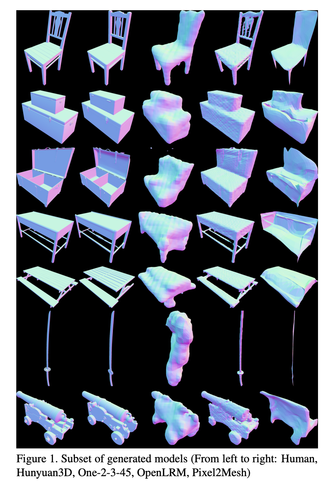
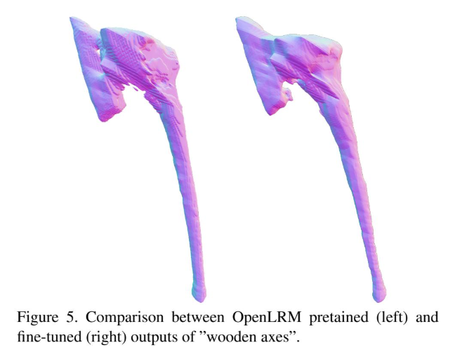
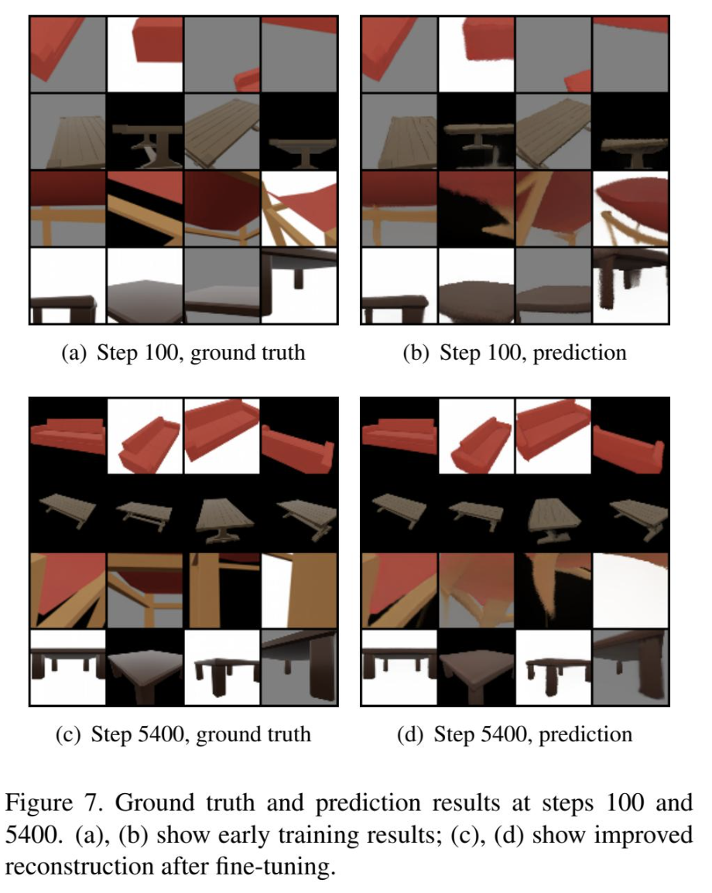

I am an R&D engineer with experience in robotics startups and the semiconductor industry. I specialize in computer vision, machine learning, control systems, and simulation. I'm pursuing a Master of Science in Computer Science (Machine Learning specialization) at Georgia Tech, and am passionate about AI-driven solutions and software development.
Projects - ML & Software
Reinforcement learning - Solving the overcooked-ai environment using CTDE MAPPO
In this project, I implemented Multi-Agent Proximal Policy Optimization (MAPPO) to solve coordination tasks in the cooperative Overcooked environment. The goal was to train two agents to cook and serve onion soups efficiently across three increasingly complex layouts.
Implemented Centralized Training with Decentralized Execution (CTDE) to enable agents to coordinate using a shared critic while maintaining independent policies at inference time.
Used shared advantage estimation from global state and joint observations to promote team-level success and discourage selfish behavior.
Demonstrated that without CTDE (e.g., individualized advantage estimation), agents tend to behave greedily, resulting in degraded cooperation and suboptimal team performance.
Addressed sparse and delayed rewards with reward shaping on intermediate subgoals (e.g., placing onions, picking up dishes/soups) using a geometric decay schedule to gradually shift focus to the main objective.
Trained actor-critic models using PyTorch with GAE, Smooth L1 critic loss, entropy regularization, and PPO-style clipped objectives to stabilize learning dynamics.
Achieved convergence across all layouts, with agents consistently delivering 7–11 soups per episode and specializing into asymmetric but cooperative roles.
Reinforcement learning - solving lunar lander using SAC
This project explored the application of modern reinforcement learning algorithms to solve the continuous control problem in the LunarLanderContinuous-v3 environment. The goal was to land a simulated lunar module safely using deep RL methods suited for continuous action spaces.
Soft Actor-Critic (SAC) is selected for its off-policy learning, entropy-regularized exploration, stable value estimation with twin Q-networks, and superior efficiently in data sampling.
Trained the agent over 1000 episodes; learning proceeded through 3 phases:
Phase 1 (episode 50): Exploration and frequent crashes.
Phase 2 (episode 200): Suboptimal “hovering” policy to avoid crashes.
Phase 3 (episode 800): Consistent safe landings with average reward > 200.
Analyzed sensitivity to key hyperparameters:
Entropy coefficient (α): Critical for balancing exploration–exploitation; improper tuning led to policy collapse or stagnation.
Learning rate: High LR caused instability, low LR slowed convergence; 2e-4 achieved optimal balance.
Target update rate (τ): A fast update rate (τ = 0.005) yielded stable critics; high τ led to value estimation noise and erratic actor updates.
MeshQuest: Benchmarking and Fine-Tuning Generative Models for Stylized 3D Game Assets



This project evaluates and fine-tunes generative AI models for creating stylized 3D game assets from single-view images. We benchmarked four pretrained models—Hunyuan3D, OpenLRM, One-2-3-45, and Pixel2Mesh—on 16 curated assets and fine-tuned OpenLRM using a custom low-poly dataset to assess trade-offs between mesh quality, efficiency, and stylization.
Evaluated models using geometric metrics (Chamfer & Hausdorff distances), mesh complexity (face count), inference/render time, and a 20-person human perceptual study ranking mesh quality.
Hunyuan3D (diffusion-based) achieved the highest fidelity (HD: 0.16, CD: 0.08) but incurred long inference (13s) and GPU rendering time (2.96ms).
OpenLRM (transformer-based) offered a strong balance between mesh quality (HD: 0.18), efficiency (8.5s), and scalability. It was selected for fine-tuning.
Fine-tuned OpenLRM on a dataset of 734 low-poly meshes across four categories (chairs, tables, chests, weapons). Used a frozen DINOv2 image encoder and triplane-based NeRF decoder with marching cubes mesh extraction.
Applied mixed precision training, cosine annealing with warmup, and careful regularization (AdamW, LR: 6e-5) to stabilize learning and prevent mode collapse.
Introduced TV loss for mesh smoothness and combined pixel & perceptual losses. Training converged in 150 epochs over 5400 steps on 2×H200 GPUs.
Observed improvements in point cloud structure and perceptual loss, but mesh fidelity remained limited due to the use of non-trainable marching cubes, which failed to preserve sharp edges or stylized features.
Identified major bottlenecks:
Dataset imbalance (e.g., only 29 chests vs. 297 weapons).
High intra-class variance and low novelty compared to pretraining data.
Mesh extraction limitations dominating final mesh quality.
This project demonstrates practical benchmarking of generative 3D models, real-world challenges in domain-specific fine-tuning, and deep understanding of the 3D generative pipeline from rendering and NeRF to loss analysis. Future directions include using deep marching cubes, mesh tokenization, or mesh-aware LLMs to overcome current limitations.
Object Tracking via Particle Filter - 2024
Activity Classification with Motion History Image - 2024
94.4% accuracy using hierarchical classifier.
Prison Dodgeball AI using Finite State Machine - 2024
Winner among 147 participants, GameAI class project with Unity3D.
Mobile Archery Game (Unity Engine) - 2020
Experience
CAE Engineer
ASMPT
Full stack development of simulation management system for 100+ users using ASP.NET MVC and RESTful APIs
Developed ML regression models to predict mechanical performance from PDE-simulated data
Automated simulation tasks using 3D geometry processing and graph algorithms, cutting 90% task time
Conducted simulation and software validation for precision module design in semiconductor packaging
Sep 2020 - Jul 2024
Education
Georgia Institute of Technology
M.S. in Computer Science - Machine Learning
GPA: 4.00 | Expected Graduation: Apl 2026
Courses taken: Computer vision, Game AI, Machine Learning, Deep Learning, Reinforcement Learning, Robotics AI Techniques, Advanced Operating Systems, GPU Hardware and Software
Pending: Graduate Algorithms, System Design for Cloud Computing